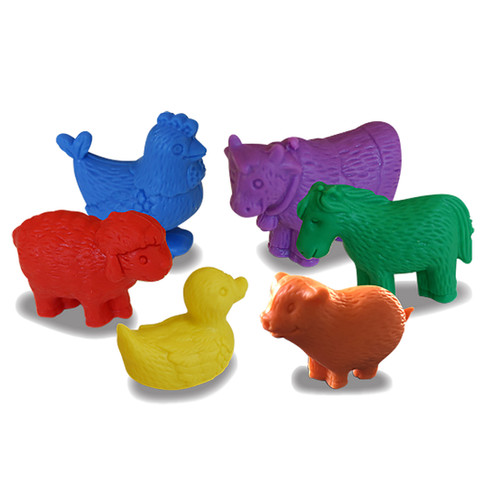
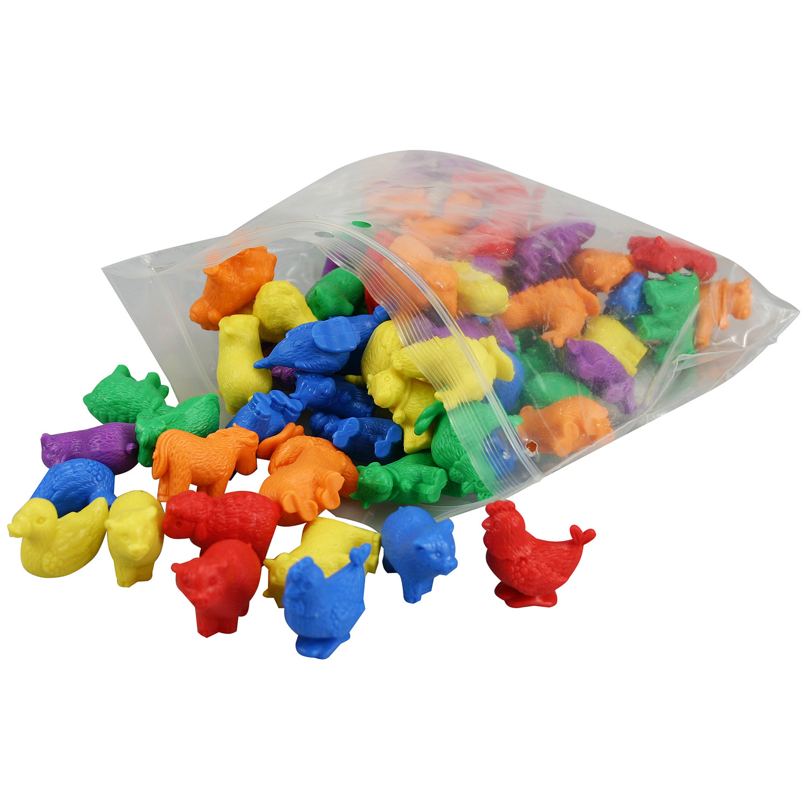

Available
Farm Animal Counters
Arts and Crafts
R250These fun and brightly coloured, soft-touch farm animal counters shift imaginations.Designed to capture a child’s interest and imagination, these mini farm animals will also lead to hours of creative work and play.This set of 72 soft rubber counters comes in 6 colours (yellow, blue, red, orange, green, purple) and shapes (chicken, cow, duck, horse, pig and sheep).Activity guide included.Age 3+.
Enquire about this product
Farm Animal Counters at Kids Corner KZN
Farm Animal Counters is part of our Arts and Crafts collection. Kids Corner KZN stocks toys for learning, pretend play, creative play, gifting and everyday childhood discovery in South Africa.
Browse more Arts and Crafts toys